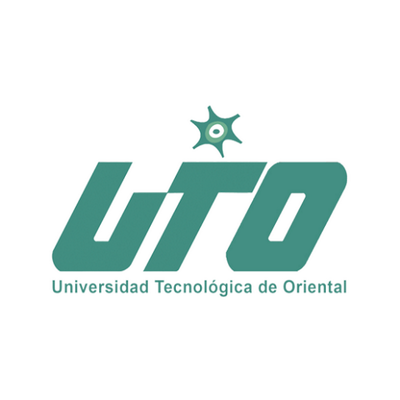

Universidad Tecnológica De Oriental es una institución de formación profesional, con presencia según matrículas en 2022 en Puebla (639), centrando la mayor parte del estudiantado en los municipios de Oriental (639). En 2022, Universidad Tecnológica De Oriental tuvo 639 matriculados, de los cuales 50.5% (323) fueron hombres y 49.5% (316) fueron mujeres. Universidad Tecnológica De Oriental es una institución de formación profesional, con presencia según matrículas en 2022 en Puebla (639), centrando la mayor parte del estudiantado en los municipios de Oriental (639). En 2022, Universidad Tecnológica De Oriental tuvo 639 matriculados, de los cuales 50.5% (323) fueron hombres y 49.5% (316) fueron mujeres. En 2022, la institución tuvo 258 egresados, de estos 121 fueron hombres y 137 mujeres. Las áreas con más egresados fueron Administración y negocios (141), Ingeniería, manufactura y construcción (56) y Agronomía y veterinaria (33).
